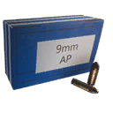

The six trees
Schematics are bought with schematic points. Each tree has its own kind of points, earned in its own way; within a path you unlock from left to right. Once unlocked, a schematic can be crafted as often as you have materials for it. Free schematics are unlocked from the start.
| Tree | Currency | How you earn it (game text) | Schematics | Free | DLC | Total points |
|---|---|---|---|---|---|---|
| Apparel | Apparel Schematic Points | Found as loot when defeating Rivals. | 115 | – | – | 552 |
| Ammo | Ammo Schematic Points | Acquired by crafting ammo or found as loot when exploring the world. | 24 | 1 | – | 544 |
 Equipment Equipment | Equipment Schematic Points | Acquired by crafting equipment or found as loot when exploring the world. | 22 | 2 | – | 629 |
| Experimental | Experimental Schematic Points | Acquired by completing Base Assault and Defense missions. | 24 | – | – | 164 |
| Companion | Companion Schematic Points (CSP) | Acquired by traveling with your Companion and destroying machines together. | 24 | 1 | 12 | 3,100 |
| DLC | DLC Schematic Points | Acquired by crafting DLC items. | 20 | 5 | 20 | 41 |
Apparel tree115 schematics · 552 points
Found as loot when defeating Rivals.
Unlocking the whole tree costs 552 pointsEvery apparel row has five ranks costing 1, 2, 4, 7, 10 points (24 for a full row; 23 rows in all). An apparel schematic doesn't make a new garment, it improves one you have: rank 1 adds the property, and each higher rank upgrades a garment that already has the rank below. Pants and shoes have an Athletic row and shoes a Padded row; shirts and jackets don't.
Pants
Details: Pants30 schematics
| Schematic | Rank | Cost | With prereqs | Recipe (one craft) | |
|---|---|---|---|---|---|
| Bullet-Resistant Pants Makes pants more bullet-resistant. | R1 | 1 | 1 |  8× Adhesive 8× Adhesive  16× Wood 16× Wood | |
| Bullet-Resistant Pants | R2 | 2 | 3 | 12× Adhesive  24× Plastic 1× Bullet-Resistant Pants with rank 1 24× Plastic 1× Bullet-Resistant Pants with rank 1 | |
| Bullet-Resistant Pants | R3 | 4 | 7 | 16× Adhesive  32× Steel 1× Bullet-Resistant Pants with rank 2 32× Steel 1× Bullet-Resistant Pants with rank 2 | |
| Bullet-Resistant Pants | R4 | 7 | 14 | 24× Adhesive  2× Refined Tungsten Alloy 1× Bullet-Resistant Pants with rank 3 2× Refined Tungsten Alloy 1× Bullet-Resistant Pants with rank 3 | |
| Bullet-Resistant Pants | R5 | 10 | 24 | 36× Adhesive 4× Refined Tungsten Alloy 1× Bullet-Resistant Pants with rank 4 | |
| Stealthy Pants Reduces movement noise for pants. | R1 | 1 | 2 |  8× Thread 8× Thread  16× Textile 16× Textile | |
| Stealthy Pants | R2 | 2 | 4 | 12× Thread 24× Plastic 1× Stealthy Pants with rank 1 | |
| Stealthy Pants | R3 | 4 | 8 | 16× Thread  32× Rubber 1× Stealthy Pants with rank 2 32× Rubber 1× Stealthy Pants with rank 2 | |
| Stealthy Pants | R4 | 7 | 15 | 24× Thread  5× Refined Aluminum Alloy 1× Stealthy Pants with rank 3 5× Refined Aluminum Alloy 1× Stealthy Pants with rank 3 | |
| Stealthy Pants | R5 | 10 | 25 | 36× Thread 10× Refined Aluminum Alloy 1× Stealthy Pants with rank 4 | |
| Fireproofed Pants Makes pants more fire-resistant. | R1 | 1 | 3 | 8× Thread 16× Textile | |
| Fireproofed Pants | R2 | 2 | 5 | 12× Thread 24× Plastic 1× Fireproofed Pants with rank 1 | |
| Fireproofed Pants | R3 | 4 | 9 | 16× Thread  8× Aluminum 1× Fireproofed Pants with rank 2 8× Aluminum 1× Fireproofed Pants with rank 2 | |
| Fireproofed Pants | R4 | 7 | 16 | 24× Thread  150× Phosphorus 1× Fireproofed Pants with rank 3 150× Phosphorus 1× Fireproofed Pants with rank 3 | |
| Fireproofed Pants | R5 | 10 | 26 | 36× Thread 300× Phosphorus 1× Fireproofed Pants with rank 4 | |
| Camouflage Pants Adds visual camouflage to pants. | R1 | 1 | 4 | 8× Adhesive 16× Wood | |
| Camouflage Pants | R2 | 2 | 6 | 12× Adhesive 24× Textile 1× Camouflage Pants with rank 1 | |
| Camouflage Pants | R3 | 4 | 10 | 16× Adhesive 32× Plastic 1× Camouflage Pants with rank 2 | |
| Camouflage Pants | R4 | 7 | 17 | 24× Adhesive  40× Ethanol 1× Camouflage Pants with rank 3 40× Ethanol 1× Camouflage Pants with rank 3 | |
| Camouflage Pants | R5 | 10 | 27 | 36× Adhesive 80× Ethanol 1× Camouflage Pants with rank 4 | |
| Blast-Resistant Pants Makes pants more resistant to explosive damage. | R1 | 1 | 5 | 8× Thread 16× Wood | |
| Blast-Resistant Pants | R2 | 2 | 7 | 12× Thread 24× Steel 1× Blast-Resistant Pants with rank 1 | |
| Blast-Resistant Pants | R3 | 4 | 11 | 16× Thread 32× Rubber 1× Blast-Resistant Pants with rank 2 | |
| Blast-Resistant Pants | R4 | 7 | 18 | 24× Thread  1× Refined Uranium Alloy 1× Blast-Resistant Pants with rank 3 1× Refined Uranium Alloy 1× Blast-Resistant Pants with rank 3 | |
| Blast-Resistant Pants | R5 | 10 | 28 | 36× Thread 2× Refined Uranium Alloy 1× Blast-Resistant Pants with rank 4 | |
| Athletic Pants Add increased jump height to pants. | R1 | 1 | 6 | 8× Thread 16× Steel | |
| Athletic Pants | R2 | 2 | 8 | 12× Thread 24× Rubber 1× Athletic Pants with rank 1 | |
| Athletic Pants | R3 | 4 | 12 | 16× Thread 8× Aluminum 1× Athletic Pants with rank 2 | |
| Athletic Pants | R4 | 7 | 19 | 24× Thread 40× Ethanol 1× Athletic Pants with rank 3 | |
| Athletic Pants | R5 | 10 | 29 | 36× Thread 80× Ethanol 1× Athletic Pants with rank 4 |
Shirts
Details: Shirts25 schematics
| Schematic | Rank | Cost | With prereqs | Recipe (one craft) | |
|---|---|---|---|---|---|
| Bullet-Resistant Shirt Makes shirts more bullet-resistant. | R1 | 1 | 1 | 8× Adhesive 16× Wood | |
| Bullet-Resistant Shirt | R2 | 2 | 3 | 12× Adhesive 24× Plastic 1× Bullet-Resistant Shirt with rank 1 | |
| Bullet-Resistant Shirt | R3 | 4 | 7 | 16× Adhesive 32× Steel 1× Bullet-Resistant Shirt with rank 2 | |
| Bullet-Resistant Shirt | R4 | 7 | 14 | 24× Adhesive 2× Refined Tungsten Alloy 1× Bullet-Resistant Shirt with rank 3 | |
| Bullet-Resistant Shirt | R5 | 10 | 24 | 36× Adhesive 4× Refined Tungsten Alloy 1× Bullet-Resistant Shirt with rank 4 | |
| Stealthy Shirt Reduces movement noise for shirts. | R1 | 1 | 2 | 8× Thread 16× Textile | |
| Stealthy Shirt | R2 | 2 | 4 | 12× Thread 24× Plastic 1× Stealthy Shirt with rank 1 | |
| Stealthy Shirt | R3 | 4 | 8 | 16× Thread 32× Rubber 1× Stealthy Shirt with rank 2 | |
| Stealthy Shirt | R4 | 7 | 15 | 24× Thread 5× Refined Aluminum Alloy 1× Stealthy Shirt with rank 3 | |
| Stealthy Shirt | R5 | 10 | 25 | 36× Thread 10× Refined Aluminum Alloy 1× Stealthy Shirt with rank 4 | |
| Fireproofed Shirt Makes shirts more fire-resistant. | R1 | 1 | 3 | 8× Thread 16× Textile | |
| Fireproofed Shirt | R2 | 2 | 5 | 12× Thread 24× Plastic 1× Fireproofed Shirt with rank 1 | |
| Fireproofed Shirt | R3 | 4 | 9 | 16× Thread 8× Aluminum 1× Fireproofed Shirt with rank 2 | |
| Fireproofed Shirt | R4 | 7 | 16 | 24× Thread 150× Phosphorus 1× Fireproofed Shirt with rank 3 | |
| Fireproofed Shirt | R5 | 10 | 26 | 36× Thread 300× Phosphorus 1× Fireproofed Shirt with rank 4 | |
| Camouflage Shirt Adds visual camouflage to shirts. | R1 | 1 | 4 | 8× Adhesive 16× Wood | |
| Camouflage Shirt | R2 | 2 | 6 | 12× Adhesive 24× Textile 1× Camouflage Shirt with rank 1 | |
| Camouflage Shirt | R3 | 4 | 10 | 16× Adhesive 32× Plastic 1× Camouflage Shirt with rank 2 | |
| Camouflage Shirt | R4 | 7 | 17 | 24× Adhesive 40× Ethanol 1× Camouflage Shirt with rank 3 | |
| Camouflage Shirt | R5 | 10 | 27 | 36× Adhesive 80× Ethanol 1× Camouflage Shirt with rank 4 | |
| Blast-Resistant Shirt Makes shirts more resistant to explosive damage. | R1 | 1 | 5 | 8× Thread 16× Wood | |
| Blast-Resistant Shirt | R2 | 2 | 7 | 12× Thread 24× Steel 1× Blast-Resistant Shirt with rank 1 | |
| Blast-Resistant Shirt | R3 | 4 | 11 | 16× Thread 32× Rubber 1× Blast-Resistant Shirt with rank 2 | |
| Blast-Resistant Shirt | R4 | 7 | 18 | 24× Thread 1× Refined Uranium Alloy 1× Blast-Resistant Shirt with rank 3 | |
| Blast-Resistant Shirt | R5 | 10 | 28 | 36× Thread 2× Refined Uranium Alloy 1× Blast-Resistant Shirt with rank 4 |
Jackets
Details: Jackets25 schematics
| Schematic | Rank | Cost | With prereqs | Recipe (one craft) | |
|---|---|---|---|---|---|
| Bullet-Resistant Jacket Makes jackets more bullet-resistant. | R1 | 1 | 1 | 8× Adhesive 16× Wood | |
| Bullet-Resistant Jacket | R2 | 2 | 3 | 12× Adhesive 24× Plastic 1× Bullet-Resistant Jacket with rank 1 | |
| Bullet-Resistant Jacket | R3 | 4 | 7 | 16× Adhesive 32× Steel 1× Bullet-Resistant Jacket with rank 2 | |
| Bullet-Resistant Jacket | R4 | 7 | 14 | 24× Adhesive 2× Refined Tungsten Alloy 1× Bullet-Resistant Jacket with rank 3 | |
| Bullet-Resistant Jacket | R5 | 10 | 24 | 36× Adhesive 4× Refined Tungsten Alloy 1× Bullet-Resistant Jacket with rank 4 | |
| Stealthy Jacket Reduces movement noise for jackets. | R1 | 1 | 2 | 8× Thread 16× Textile | |
| Stealthy Jacket | R2 | 2 | 4 | 12× Thread 24× Plastic 1× Stealthy Jacket with rank 1 | |
| Stealthy Jacket | R3 | 4 | 8 | 16× Thread 32× Rubber 1× Stealthy Jacket with rank 2 | |
| Stealthy Jacket | R4 | 7 | 15 | 24× Thread 5× Refined Aluminum Alloy 1× Stealthy Jacket with rank 3 | |
| Stealthy Jacket | R5 | 10 | 25 | 36× Thread 10× Refined Aluminum Alloy 1× Stealthy Jacket with rank 4 | |
| Fireproofed Jacket Makes jackets more fire-resistant. | R1 | 1 | 3 | 8× Thread 16× Textile | |
| Fireproofed Jacket | R2 | 2 | 5 | 12× Thread 24× Plastic 1× Fireproofed Jacket with rank 1 | |
| Fireproofed Jacket | R3 | 4 | 9 | 16× Thread 8× Aluminum 1× Fireproofed Jacket with rank 2 | |
| Fireproofed Jacket | R4 | 7 | 16 | 24× Thread 150× Phosphorus 1× Fireproofed Jacket with rank 3 | |
| Fireproofed Jacket | R5 | 10 | 26 | 36× Thread 300× Phosphorus 1× Fireproofed Jacket with rank 4 | |
| Camouflage Jacket Adds visual camouflage to jackets. | R1 | 1 | 4 | 8× Adhesive 16× Wood | |
| Camouflage Jacket | R2 | 2 | 6 | 12× Adhesive 24× Textile 1× Camouflage Jacket with rank 1 | |
| Camouflage Jacket | R3 | 4 | 10 | 16× Adhesive 32× Plastic 1× Camouflage Jacket with rank 2 | |
| Camouflage Jacket | R4 | 7 | 17 | 24× Adhesive 40× Ethanol 1× Camouflage Jacket with rank 3 | |
| Camouflage Jacket | R5 | 10 | 27 | 36× Adhesive 80× Ethanol 1× Camouflage Jacket with rank 4 | |
| Blast-Resistant Jacket Makes jackets more resistant to explosive damage. | R1 | 1 | 5 | 8× Thread 16× Wood | |
| Blast-Resistant Jacket | R2 | 2 | 7 | 12× Thread 24× Steel 1× Blast-Resistant Jacket with rank 1 | |
| Blast-Resistant Jacket | R3 | 4 | 11 | 16× Thread 32× Rubber 1× Blast-Resistant Jacket with rank 2 | |
| Blast-Resistant Jacket | R4 | 7 | 18 | 24× Thread 1× Refined Uranium Alloy 1× Blast-Resistant Jacket with rank 3 | |
| Blast-Resistant Jacket | R5 | 10 | 28 | 36× Thread 2× Refined Uranium Alloy 1× Blast-Resistant Jacket with rank 4 |
Shoes
Details: Shoes35 schematics
| Schematic | Rank | Cost | With prereqs | Recipe (one craft) | |
|---|---|---|---|---|---|
| Bullet-Resistant Shoes Makes shoes more bullet-resistant. | R1 | 1 | 1 | 8× Adhesive 16× Wood | |
| Bullet-Resistant Shoes | R2 | 2 | 3 | 12× Adhesive 24× Plastic 1× Bullet-Resistant Shoes with rank 1 | |
| Bullet-Resistant Shoes | R3 | 4 | 7 | 16× Adhesive 32× Steel 1× Bullet-Resistant Shoes with rank 2 | |
| Bullet-Resistant Shoes | R4 | 7 | 14 | 24× Adhesive 2× Refined Tungsten Alloy 1× Bullet-Resistant Shoes with rank 3 | |
| Bullet-Resistant Shoes | R5 | 10 | 24 | 36× Adhesive 4× Refined Tungsten Alloy 1× Bullet-Resistant Shoes with rank 4 | |
| Stealthy Shoes Reduces movement noise for shoes. | R1 | 1 | 2 | 8× Thread 16× Textile | |
| Stealthy Shoes | R2 | 2 | 4 | 12× Thread 24× Plastic 1× Stealthy Shoes with rank 1 | |
| Stealthy Shoes | R3 | 4 | 8 | 16× Thread 32× Rubber 1× Stealthy Shoes with rank 2 | |
| Stealthy Shoes | R4 | 7 | 15 | 24× Thread 5× Refined Aluminum Alloy 1× Stealthy Shoes with rank 3 | |
| Stealthy Shoes | R5 | 10 | 25 | 36× Thread 10× Refined Aluminum Alloy 1× Stealthy Shoes with rank 4 | |
| Fireproofed Shoes Makes shoes more fire-resistant. | R1 | 1 | 3 | 8× Thread 16× Textile | |
| Fireproofed Shoes | R2 | 2 | 5 | 12× Thread 24× Plastic 1× Fireproofed Shoes with rank 1 | |
| Fireproofed Shoes | R3 | 4 | 9 | 16× Thread 8× Aluminum 1× Fireproofed Shoes with rank 2 | |
| Fireproofed Shoes | R4 | 7 | 16 | 24× Thread 150× Phosphorus 1× Fireproofed Shoes with rank 3 | |
| Fireproofed Shoes | R5 | 10 | 26 | 36× Thread 300× Phosphorus 1× Fireproofed Shoes with rank 4 | |
| Camouflage Shoes Adds visual camouflage to shoes. | R1 | 1 | 4 | 8× Adhesive 16× Wood | |
| Camouflage Shoes | R2 | 2 | 6 | 12× Adhesive 24× Textile 1× Camouflage Shoes with rank 1 | |
| Camouflage Shoes | R3 | 4 | 10 | 16× Adhesive 32× Plastic 1× Camouflage Shoes with rank 2 | |
| Camouflage Shoes | R4 | 7 | 17 | 24× Adhesive 40× Ethanol 1× Camouflage Shoes with rank 3 | |
| Camouflage Shoes | R5 | 10 | 27 | 36× Adhesive 80× Ethanol 1× Camouflage Shoes with rank 4 | |
| Blast-Resistant Shoes Makes shoes more resistant to explosive damage. | R1 | 1 | 5 | 8× Thread 16× Wood | |
| Blast-Resistant Shoes | R2 | 2 | 7 | 12× Thread 24× Steel 1× Blast-Resistant Shoes with rank 1 | |
| Blast-Resistant Shoes | R3 | 4 | 11 | 16× Thread 32× Rubber 1× Blast-Resistant Shoes with rank 2 | |
| Blast-Resistant Shoes | R4 | 7 | 18 | 24× Thread 1× Refined Uranium Alloy 1× Blast-Resistant Shoes with rank 3 | |
| Blast-Resistant Shoes | R5 | 10 | 28 | 36× Thread 2× Refined Uranium Alloy 1× Blast-Resistant Shoes with rank 4 | |
| Athletic Shoes Add increased jump height to shoes. | R1 | 1 | 6 | 8× Thread 16× Steel | |
| Athletic Shoes | R2 | 2 | 8 | 12× Thread 24× Rubber 1× Athletic Shoes with rank 1 | |
| Athletic Shoes | R3 | 4 | 12 | 16× Thread 8× Aluminum 1× Athletic Shoes with rank 2 | |
| Athletic Shoes | R4 | 7 | 19 | 24× Thread 40× Ethanol 1× Athletic Shoes with rank 3 | |
| Athletic Shoes | R5 | 10 | 29 | 36× Thread 80× Ethanol 1× Athletic Shoes with rank 4 | |
| Padded Shoes Apparel crafting schematic for shoes, that reduces fall damage. | R1 | 1 | 7 | 8× Thread 16× Plastic | |
| Padded Shoes | R2 | 2 | 9 | 12× Thread  6× Lead 1× Padded Shoes with rank 1 6× Lead 1× Padded Shoes with rank 1 | |
| Padded Shoes | R3 | 4 | 13 | 16× Thread 32× Steel 1× Padded Shoes with rank 2 | |
| Padded Shoes | R4 | 7 | 20 | 24× Thread 5× Refined Aluminum Alloy 1× Padded Shoes with rank 3 | |
| Padded Shoes | R5 | 10 | 30 | 36× Thread 10× Refined Aluminum Alloy 1× Padded Shoes with rank 4 |
Ammo tree24 schematics · 544 points
Acquired by crafting ammo or found as loot when exploring the world.
Unlocking the whole tree costs 544 pointsDetails24 schematics
| Schematic | Path | Q | Cost | With prereqs | Recipe (one craft) | Needs first | |
|---|---|---|---|---|---|---|---|
| .32 ACP Hollow-Point Ammo Free | Start | Q1 | 0 | 0 |  4× Explosive 2× Lead 4× Explosive 2× Lead | – | |
| 9mm FMJ Ammo (SMG) | Path 1 | Q1 | 1 | 1 | 4× Explosive 2× Lead | .32 ACP Hollow-Point Ammo | |
| 5.56mm Full Metal Jacket Ammo | Path 1 | Q1 | 5 | 6 | 4× Explosive 2× Lead | 9mm FMJ Ammo (SMG) | |
| 9mm AP Ammo (SMG) | Path 1 | Q1 | 10 | 16 | 4× Explosive 8× Steel | 5.56mm Full Metal Jacket Ammo | |
| 7.62mm Full Metal Jacket Ammo | Path 1 | Q1 | 20 | 36 | 4× Explosive 2× Lead | 9mm AP Ammo (SMG) | |
| 5.56mm Armor-Piercing Ammo | Path 1 | Q1 | 40 | 76 | 4× Explosive 8× Steel | 7.62mm Full Metal Jacket Ammo | |
| 7.62mm Armor-Piercing Ammo | Path 1 | Q1 | 80 | 156 | 4× Explosive 8× Steel | 5.56mm Armor-Piercing Ammo | |
| 9mm FMJ Ammo (Handgun) | Path 2 | Q1 | 1 | 1 | 4× Explosive 2× Lead | .32 ACP Hollow-Point Ammo | |
| .32 ACP Full Metal Jacket Ammo | Path 2 | Q1 | 5 | 6 | 4× Explosive 8× Steel | 9mm FMJ Ammo (Handgun) | |
| .44 Hollow-Point Ammo | Path 2 | Q1 | 10 | 16 | 4× Explosive 2× Lead | .32 ACP Full Metal Jacket Ammo | |
| 9mm AP Ammo (Handgun) Makes  9mm Armor-Piercing Ammo (Handgun) | Path 2 | Q1 | 20 | 36 | 4× Explosive 8× Steel | .44 Hollow-Point Ammo | |
| .44 Full Metal Jacket Ammo | Path 2 | Q1 | 40 | 76 | 4× Explosive 8× Steel | 9mm AP Ammo (Handgun) | |
| 12ga Birdshot Ammo | Path 3 | Q1 | 1 | 1 | 4× Explosive 2× Lead | .32 ACP Hollow-Point Ammo | |
| 12ga Buckshot Ammo | Path 3 | Q1 | 5 | 6 | 4× Explosive 2× Lead | 12ga Birdshot Ammo | |
| High-Explosive Dual-Purpose Round | Path 3 | Q1 | 10 | 16 | 4× Explosive 8× Steel | 12ga Buckshot Ammo | |
| 12ga Slug Ammo | Path 3 | Q1 | 20 | 36 | 4× Explosive 8× Steel | High-Explosive Dual-Purpose Round | |
| Smoke Round | Path 3 | Q1 | 40 | 76 | 4× Explosive 2× Aluminum | 12ga Slug Ammo | |
| Electromagnetic Pulse Round | Path 3 | Q1 | 80 | 156 |  4× Electrolyte 4× Electrolyte  2× Copper 2× Copper | Smoke Round | |
| .243 Soft-Point Ammo | Path 4 | Q1 | 1 | 1 | 4× Explosive 2× Lead | .32 ACP Hollow-Point Ammo | |
| .270 Soft-Point Ammo | Path 4 | Q1 | 5 | 6 | 4× Explosive 2× Lead | .243 Soft-Point Ammo | |
| .243 Full Metal Jacket Ammo | Path 4 | Q1 | 10 | 16 | 4× Explosive 8× Steel | .270 Soft-Point Ammo | |
| .50 BMG Full Metal Jacket Ammo. | Path 4 | Q1 | 20 | 36 | 4× Explosive 2× Lead | .243 Full Metal Jacket Ammo | |
| .270 Full Metal Jacket Ammo | Path 4 | Q1 | 40 | 76 | 4× Explosive 8× Steel | .50 BMG Full Metal Jacket Ammo. | |
| .50 BMG Armor-Piercing Ammo | Path 4 | Q1 | 80 | 156 | 4× Explosive 8× Steel | .270 Full Metal Jacket Ammo |

Equipment tree22 schematics · 629 points
Acquired by crafting equipment or found as loot when exploring the world.
Unlocking the whole tree costs 629 pointsThe two schematics under Not in a tree (Gasoline for the motorbikes, and the Repair Kit) aren't part of any path: they cost nothing and are unlocked from the start.
Equipment schematic tree
Details: Equipment schematic tree20 schematics
| Schematic | Path | Q | Cost | With prereqs | Recipe (one craft) | Needs first | |
|---|---|---|---|---|---|---|---|
| Simple First Aid Kit Simple first aid kits that restores a little bit of the player's health. | Start | Q1 | 1 | 1 | 2× Adhesive 2× Textile | – | |
| Explosive Gas Tank Compressed gas tanks containing explosive materials. Will cause high levels of damage to its surroundings if destroyed. | Path 1 | Q1 | 1 | 2 | 100× Gasoline 1× Compressed Air Tank | Simple First Aid Kit | |
| Grenade Explosive hand grenades. | Path 1 | Q1 | 5 | 7 | 2× Explosive 6× Phosphorus | Explosive Gas Tank | |
| Compressed Air Tank Compressed gas tanks with air inside. Will cause a large shockwave to its surroundings if destroyed. | Path 1 | Q1 | 10 | 17 | 2× Adhesive 4× Steel | Grenade | |
| Smoke Grenade Grenades that produce thick, impenetrable smoke for a short period of time. | Path 1 | Q1 | 20 | 37 | 2× Adhesive 1× Grenade | Compressed Air Tank | |
| Poison Gas Tank Compressed gas tanks containing poisonous materials. Will create a lethal cloud of gas if destroyed. | Path 1 | Q1 | 40 | 77 | 4× Electrolyte 8× Steel | Smoke Grenade | |
| Land Mine Explosive land mines that detonate when anyone or anything steps on them. | Path 1 | Q1 | 80 | 157 |  2× Titanium 1× Compressed Air Tank 2× Titanium 1× Compressed Air Tank | Poison Gas Tank | |
| Field Radio Field radios that creates mobile rendezvous points for you and your friends, allowing them to fast-travel to that spot. | Path 2 | Q1 | 1 | 2 | 1× Car Battery EMP 1× Radio | Simple First Aid Kit | |
| Lockpick Hairpin Lockpicks. Used to gain access to lightly secured doors, if you have unlocked the appropriate skill. | Path 2 | Q1 | 5 | 7 | 2× Thread 4× Steel | Field Radio | |
| Standard First Aid Kit Standard first aid kits that restore a medium amount of the player's health. | Path 2 | Q1 | 10 | 17 | 6× Adhesive 6× Textile | Lockpick Hairpin | |
| Ammo Pack Deployable ammo packs that supplies you and your team with extra ammo for your currently equipped weapon. | Path 2 | Q1 | 20 | 37 | 1× Car Battery EMP 1× Grenade | Standard First Aid Kit | |
| Advanced First Aid Kit Advanced first aid kits that restore a large amount of the player's health. | Path 2 | Q1 | 40 | 77 | 6× Adhesive 6× Textile 5× Ethanol | Ammo Pack | |
| Paramedic Response Pack Deployable health packs that allows you and your team to interact with it to heal up. | Path 2 | Q1 | 80 | 157 | 30× Ethanol 1× Advanced First Aid Kit | Advanced First Aid Kit | |
| Radio Noisy portable radios that's bound to draw the attention of nearby machines. | Path 3 | Q1 | 1 | 2 | 2× Electrolyte 2× Copper | Simple First Aid Kit | |
| Emergency flare Emergency road flares that machines see as targets. Medium-range lures with high effectiveness. | Path 3 | Q1 | 5 | 7 | 3× Adhesive 4× Wood | Radio | |
| Car Battery EMP Car batteries, rigged to trigger an electromagnetic pulse when hit. | Path 3 | Q1 | 10 | 17 | 2× Electrolyte 4× Rubber | Emergency flare | |
| Firework Fireworks that overload a machine's threat-identifying circuits when thrown near them. | Path 3 | Q1 | 20 | 37 | 4× Adhesive 3× Wood | Car Battery EMP | |
| Boombox Boomboxes that act as long-range lures with medium effectiveness. | Path 3 | Q1 | 40 | 77 | 4× Electrolyte 2× Copper | Firework | |
| Emergency Flare (Sticky) Emergency flares that machines see as targets. Modified to stick to the first surface it encounters. | Path 3 | Q1 | 80 | 157 | 2× Adhesive 2× Phosphorus 1× Emergency flare | Boombox | |
| Adrenaline Shot Adrenaline shots that, when consumed, will revive an unconscious player. Cannot be equipped. | Final | Q1 | 160 | 629 | 20× Textile 75× Phosphorus 35× Ethanol | Paramedic Response Pack, Emergency Flare (Sticky), Land Mine |
Not in a tree
Details: Not in a tree2 schematics
| Schematic | Path | Q | Cost | With prereqs | Recipe (one craft) | Needs first | |
|---|---|---|---|---|---|---|---|
| Gasoline Free Gasoline for the motorbikes. | Motorbike | Q1 | 0 | 0 |  4× Accelerant 2× Lead 4× Accelerant 2× Lead | – | |
| Repair Kit Free Repair Kits for performing mechanical repairs and maintenance. | Motorbike | Q1 | 0 | 0 | 2× Adhesive 4× Steel | – |
Experimental tree24 schematics · 164 points
Acquired by completing Base Assault and Defense missions.
Unlocking the whole tree costs 164 pointsExperimental schematics make the quality-6 ammo and first aid kits with special properties (corrosion, tar, shock, HEAT, proximity explosives, medicine, radioactivity), described in the details below. 22 of the 24 recipes need a refined alloy per craft, so stock up on those before you spend your points.
Details24 schematics
| Schematic | Path | Q | Cost | With prereqs | Recipe (one craft) | Needs first | |
|---|---|---|---|---|---|---|---|
| 12ga Slug Corrosive Ammo Experimental ammo crafting schematic that makes 12ga Slug Corrosive Ammo. Properties: Corrosion: deals significantly heavier damage to armor, but less damage to components. | Path 1 | Q6 | 1 | 1 | 16× Explosive 32× Steel 1× Refined Tungsten Alloy | – | |
| Radioactive First Aid Kit Radioactive First Aid Kits. Properties: Radioactivity: significantly speeds up stamina recovery but also applies radiation poisoning for 15 seconds. | Path 1 | Q6 | 2 | 3 | 2× Adhesive 2× Textile  1× Uranium 1× Uranium | 12ga Slug Corrosive Ammo | |
| HRDP Round Experimental ammo crafting schematic that makes Highly-Radioactive Dual-Purpose Rounds. Properties: Radioactivity: completely disables machine visual senses upon impact for a short time. Also deals very mild damage over time. These rounds have a moderate chance to inflict radioactive poisoning to the user upon firing. | Path 1 | Q6 | 4 | 7 | 16× Explosive 8× Copper 1× Refined Uranium Alloy | Radioactive First Aid Kit | |
| 12ga Slug Medical Ammo Experimental ammo crafting schematic that makes 12ga Slug Medical Ammo. Properties: Medicine: heals targets within a small area around the point of impact. This type of ammunition has no offensive capabilities. | Path 1 | Q6 | 7 | 14 | 16× Explosive 32× Steel 1× Refined Tungsten Alloy | HRDP Round | |
| Medical First Aid Kit Medical First Aid Kits. Properties: Medicine: significantly speeds up health recovery but also reduces movement speed for 15 seconds. | Path 1 | Q6 | 11 | 25 | 8× Adhesive 16× Textile 30× Ethanol | 12ga Slug Medical Ammo | |
| HCDP Round Experimental ammo crafting schematic that makes Highly Corrosive Dual-Purpose Rounds. Properties: Corrosion: deals significantly heavier damage to armor, but less damage to components. | Path 1 | Q6 | 16 | 41 | 16× Explosive 8× Aluminum 1× Refined Uranium Alloy | Medical First Aid Kit | |
| 9mm SMG Corrosive Ammo Experimental ammo crafting schematic that makes 9mm SMG Corrosive Ammo. Properties: Corrosion: deals significantly heavier damage to armor, but less damage to components. | Path 2 | Q6 | 1 | 1 | 16× Explosive 32× Steel 1× Refined Tungsten Alloy | – | |
| 5.56mm Corrosive Ammo Experimental ammo crafting schematic that makes 5.56mm Corrosive Ammo. Properties: Corrosion: deals significantly heavier damage to armor, but less damage to components. | Path 2 | Q6 | 2 | 3 | 16× Explosive 32× Steel 1× Refined Uranium Alloy | 9mm SMG Corrosive Ammo | |
| 7.62mm Tar Ammo Experimental ammo crafting schematic that makes 7.62mm Tar Ammo. Properties: Tar: bullets contain a tar-like substance which slows targets that are hit. Slowness stacks to a degree upon subsequent hits to the target. These rounds have a very small chance to ignite the user upon firing. | Path 2 | Q6 | 4 | 7 | 16× Explosive 32× Steel 1× Refined Uranium Alloy | 5.56mm Corrosive Ammo | |
| 9mm SMG Explosive Ammo Experimental ammo crafting schematic that makes 9mm SMG Explosive Ammo. Properties: Proximity Bomb: crafted with a very small proximity bomb which is deployed on a surface that the bullet hits. Alternatively can be used directly at enemies which has a small chance to immediately detonate on impact dealing heavier damage than if planted. | Path 2 | Q6 | 7 | 14 | 16× Explosive 8× Lead 1× Refined Tungsten Alloy | 7.62mm Tar Ammo | |
| 5.56mm HEAT Ammo Experimental ammo crafting schematic that makes 5.56mm HEAT Ammo. Properties: HEAT: specially crafted to directly deal significant damage to components that are behind armor. This ammunition however deals much less damage to non-component parts compared to the conventional ammo types, and no damage at all to armor itself. | Path 2 | Q6 | 11 | 25 | 16× Explosive 8× Lead 1× Refined Uranium Alloy | 9mm SMG Explosive Ammo | |
| 7.62mm Shock Ammo Experimental ammo crafting schematic that makes 7.62mm Shock Ammo. Properties: Electrical tethers: crafted with a very small mechanism which is deployed on a surface that the bullet hits. Damage-dealing electric tethers can then be formed when one mechanism is within a short distance of another newly-planted mechanism. | Path 2 | Q6 | 16 | 41 | 16× Explosive 8× Lead 1× Refined Uranium Alloy | 5.56mm HEAT Ammo | |
| .32 ACP Medical Ammo Experimental ammo crafting schematic that makes .32 ACP Medical Ammo. Properties: Medicine: heals targets within a small area around the point of impact. This type of ammunition has no offensive capabilities. | Path 3 | Q6 | 1 | 1 | 16× Explosive 32× Steel 1× Refined Aluminum Alloy | – | |
| 9mm Handgun Shock Ammo Experimental ammo crafting schematic that makes 9mm Handgun Shock Ammo. Properties: Electrical tethers: crafted with a very small mechanism which is deployed on a surface that the bullet hits. Damage-dealing electric tethers can then be formed when one mechanism is within a short distance of another newly-planted mechanism. | Path 3 | Q6 | 2 | 3 | 16× Explosive 32× Steel 1× Refined Aluminum Alloy | .32 ACP Medical Ammo | |
| .44 Explosive Ammo Experimental ammo crafting schematic that makes .44 Explosive Ammo. Properties: Proximity Bomb: crafted with a very small proximity bomb which is deployed on a surface that the bullet hits. Alternatively can be used directly at enemies which has a small chance to immediately detonate on impact dealing heavier damage than if planted. | Path 3 | Q6 | 4 | 7 | 16× Explosive 32× Steel 1× Refined Tungsten Alloy | 9mm Handgun Shock Ammo | |
| .32 ACP Radioactive Ammo Experimental ammo crafting schematic that makes .32 ACP Radioactive Ammo. Properties: Radioactivity: completely disables machine visual senses upon impact for a short time. Also deals very mild damage over time. These rounds have a small chance to inflict radioactive poisoning to the user upon firing. | Path 3 | Q6 | 7 | 14 | 16× Explosive 8× Lead 1× Refined Aluminum Alloy | .44 Explosive Ammo | |
| 9mm Handgun HEAT Ammo Experimental ammo crafting schematic that makes 9mm Handgun HEAT Ammo. Properties: HEAT: specially crafted to directly deal significant damage to components that are behind armor. This ammunition however deals much less damage to non-component parts compared to the conventional ammo types, and no damage at all to armor itself. | Path 3 | Q6 | 11 | 25 | 16× Explosive 8× Lead 1× Refined Aluminum Alloy | .32 ACP Radioactive Ammo | |
| .44 Tar Ammo Experimental ammo crafting schematic that makes .44 Tar Ammo. Properties: Tar: bullets contain a tar-like substance which slows targets that are hit. Slowness stacks to a degree upon subsequent hits to the target. These rounds have a small chance to ignite the user upon firing. | Path 3 | Q6 | 16 | 41 | 16× Explosive 8× Lead 1× Refined Tungsten Alloy | 9mm Handgun HEAT Ammo | |
| .243 HEAT Ammo Experimental ammo crafting schematic that makes .243 HEAT Ammo. Properties: HEAT: specially crafted to directly deal significant damage to components that are behind armor. This ammunition however deals much less damage to non-component parts compared to the conventional ammo types, and no damage at all to armor itself. | Path 4 | Q6 | 1 | 1 | 16× Explosive 32× Steel 1× Refined Aluminum Alloy | – | |
| .270 Shock Ammo Experimental ammo crafting schematic that makes .270 Shock Ammo. Properties: Electrical tethers: crafted with a very small mechanism which is deployed on a surface that the bullet hits. Damage-dealing electric tethers can then be formed when one mechanism is within a short distance of another newly-planted mechanism. | Path 4 | Q6 | 2 | 3 | 16× Explosive 32× Steel 1× Refined Tungsten Alloy | .243 HEAT Ammo | |
| .50 BMG Explosive Ammo Experimental ammo crafting schematic that makes .50 BMG Explosive Ammo. Properties: Proximity Bomb: crafted with a very small proximity bomb which is deployed on a surface that the bullet hits. Alternatively can be used directly at enemies which has a small chance to immediately detonate on impact dealing heavier damage than if planted. | Path 4 | Q6 | 4 | 7 | 16× Explosive 32× Steel 1× Refined Uranium Alloy | .270 Shock Ammo | |
| .243 Explosive Ammo Experimental ammo crafting schematic that makes .243 Explosive Ammo. Properties: Proximity Bomb: crafted with a very small proximity bomb which is deployed on a surface that the bullet hits. Alternatively can be used directly at enemies which has a small chance to immediately detonate on impact dealing heavier damage than if planted. | Path 4 | Q6 | 7 | 14 | 16× Explosive 8× Lead 1× Refined Aluminum Alloy | .50 BMG Explosive Ammo | |
| .270 Medical Ammo Experimental ammo crafting schematic that makes .270 Medical Ammo. Properties: Medicine: heals targets within a small area around the point of impact. This type of ammunition has no offensive capabilities. | Path 4 | Q6 | 11 | 25 | 16× Explosive 8× Lead 1× Refined Tungsten Alloy | .243 Explosive Ammo | |
| .50 BMG Medical Ammo Experimental ammo crafting schematic that makes .50 BMG Medical Ammo. Properties: Medicine: heals targets within a small area around the point of impact. This type of ammunition has no offensive capabilities. | Path 4 | Q6 | 16 | 41 | 16× Explosive 8× Lead 1× Refined Uranium Alloy | .270 Medical Ammo |
Companion tree24 schematics · 3,100 points
Acquired by traveling with your Companion and destroying machines together.
Unlocking the whole tree costs 3,100 pointsThe companion tree makes armor for your machine companion: six kinds of armor in four qualities. Standard Runner Armor is free. Costs and recipes of every piece are under Armor on the Companion page; click a piece to go there.
Companion armor
DLC tree20 schematics · 41 points
Acquired by crafting DLC items.
Unlocking the whole tree costs 41 pointsThe DLC tree holds the schematics for the gear of the paid packs. The first schematic of every path is free, so owning the pack is all it takes to start; DLC points come from crafting DLC items. The pack shown on a path is the one the weapon data gives for the weapon or the ammo in that path (the schematics themselves don't name it). The ammo of Path 5 is fired by weapons of two packs, so it shows both. Nothing in the data names the pack of Path 3, so it stays a plain DLC.
Details20 schematics
| Schematic | Path | Q | Cost | With prereqs | Recipe (one craft) | Needs first | |
|---|---|---|---|---|---|---|---|
| Molotov Cocktail Free Tactical Equipment Pack A bottle of fuel that sets the spot where it lands on fire. Its damage is on its weapon page. | Path 1 | Q1 | 0 | 0 | 4× Accelerant 2× Lead | – | |
| Remote-Controlled Explosive Tactical Equipment Pack An explosive charge you place, then set off by remote when machines are near. | Path 1 | Q1 | 1 | 1 | 4× Explosive 2× Copper | Molotov Cocktail | |
| Portable Machine Gun Turret Tactical Equipment Pack A turret you set down that fires a machine gun at machines near it. | Path 1 | Q1 | 2 | 3 | 4× Electrolyte 4× Aluminum | Remote-Controlled Explosive | |
| Portable Cover Tactical Equipment Pack A shield you set down and take cover behind. | Path 1 | Q1 | 4 | 7 | 8× Adhesive 4× Titanium | Portable Machine Gun Turret | |
| Explosive Toy Lure Tactical Equipment Pack A noisy toy that draws machines to it, then explodes. | Path 1 | Q1 | 7 | 14 | 4× Explosive 4× Thread 2× Copper | Portable Cover | |
| 9x39mm Full Metal Jacket Ammo Free Soviet Weapons Pack | Path 2 | Q1 | 0 | 0 | 4× Explosive 2× Lead | – | |
| LG-7V High-Explosive Round Soviet Weapons Pack | Path 2 | Q1 | 1 | 1 | 4× Explosive 8× Steel | 9x39mm Full Metal Jacket Ammo | |
| 9x39mm Armor-Piercing Ammo Soviet Weapons Pack | Path 2 | Q1 | 2 | 3 | 4× Explosive 8× Steel | LG-7V High-Explosive Round | |
| Toy Car Lure Free DLC A remote-controlled toy car you drive to pull machines away from you. | Path 3 | Q1 | 0 | 0 | 1× Radio 2× Adhesive 2× Plastic | – | |
| Hacking Dart DLC A dart that turns the machine it hits to your side for a while. | Path 3 | Q1 | 1 | 1 | 10× Copper 10× Rubber | Toy Car Lure | |
| Portable Homing Turret DLC A turret you set down that fires homing missiles at machines near it. | Path 3 | Q1 | 2 | 3 | 10× Aluminum 50× Steel 50× Explosive | Hacking Dart | |
| Remote-Controlled Tick DLC A Tick you steer by remote control and blow up next to machines. | Path 3 | Q1 | 4 | 7 | 5× Steel 8× Explosive | Portable Homing Turret | |
| Sensory Jammer DLC Disrupts the sensors of the machines around it, so they have a harder time finding you. | Path 3 | Q1 | 7 | 14 | 5× Electrolyte 5× Copper | Remote-Controlled Tick | |
| Resistance Arrows Free Resistance Weapons Pack | Path 4 | Q1 | 0 | 0 | 8× Wood 8× Steel | – | |
| Flamethrower Napalm Resistance Weapons Pack | Path 4 | Q1 | 1 | 1 | 4× Accelerant 8× Plastic | Resistance Arrows | |
| Resistance Flare Arrows Resistance Weapons Pack | Path 4 | Q1 | 2 | 3 | 4× Wood 1× Emergency flare | Flamethrower Napalm | |
| Resistance Explosive Arrows Resistance Weapons Pack | Path 4 | Q1 | 4 | 7 | 8× Wood 4× Explosive | Resistance Flare Arrows | |
| Grenade Launcher HE Cartridge Free Heavy Weapons Pack US Weapons Pack 2 | Path 5 | Q1 | 0 | 0 | 4× Explosive 8× Steel | – | |
| Grenade Launcher EMP Cartridge Heavy Weapons Pack US Weapons Pack 2 | Path 5 | Q1 | 1 | 1 | 4× Electrolyte 2× Copper | Grenade Launcher HE Cartridge | |
| Grenade Launcher Smoke Cartridge Heavy Weapons Pack US Weapons Pack 2 | Path 5 | Q1 | 2 | 3 | 4× Explosive 2× Aluminum | Grenade Launcher EMP Cartridge |
Schematic points on the map74 pickups
Besides the ways the game names, some schematic points lie in the world as pickups. Each pickup gives points of one currency; it doesn't unlock a particular schematic. Click a number for the map; the collectibles pages list every spot.
| Pickup | Archipelago | South Coast | Farmlands | Forest | Mountains | Marshlands | North Coast | Total |
|---|---|---|---|---|---|---|---|---|
| Ammo Schematics | 1 | 4 | 4 | 4 | 3 | 3 | 4 | 23 |
| Apparel Schematics | 4 | 7 | 7 | 7 | 9 | 7 | 7 | 48 |
| Equipment Schematics | 1 | – | – | – | 1 | 1 | – | 3 |
Schematic point pickups. 23 ammo, 48 apparel and 3 equipment schematic point pickups. The full map shows all of them with the place each one lies in.